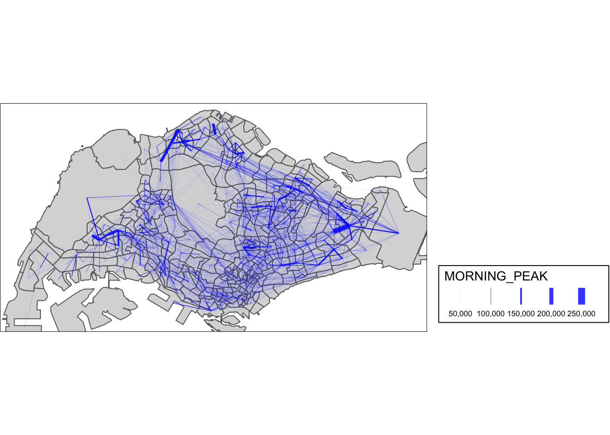
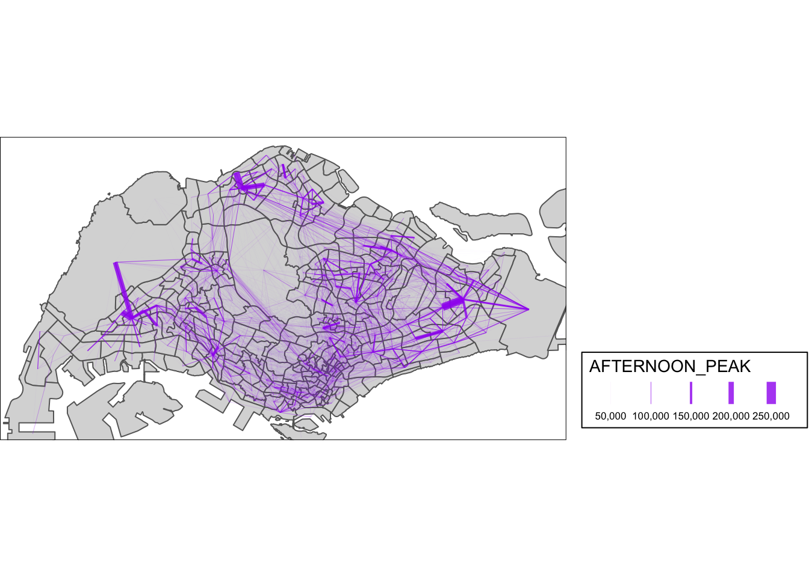
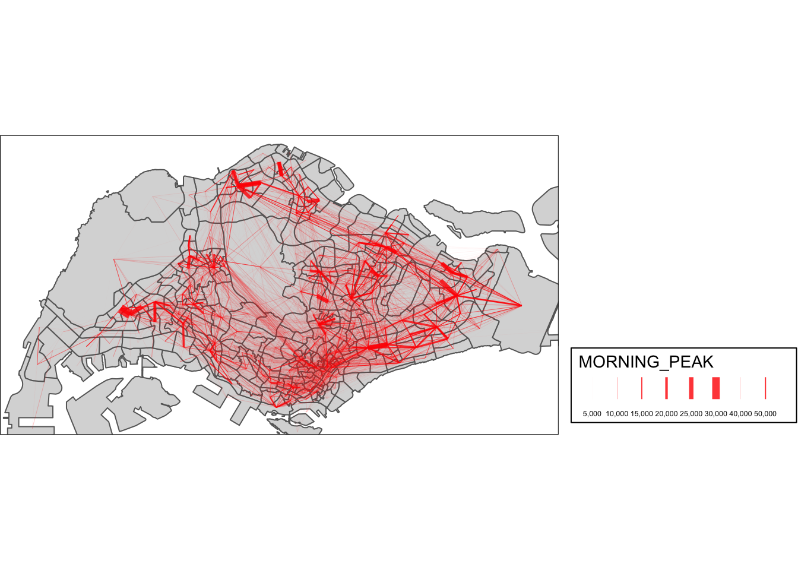
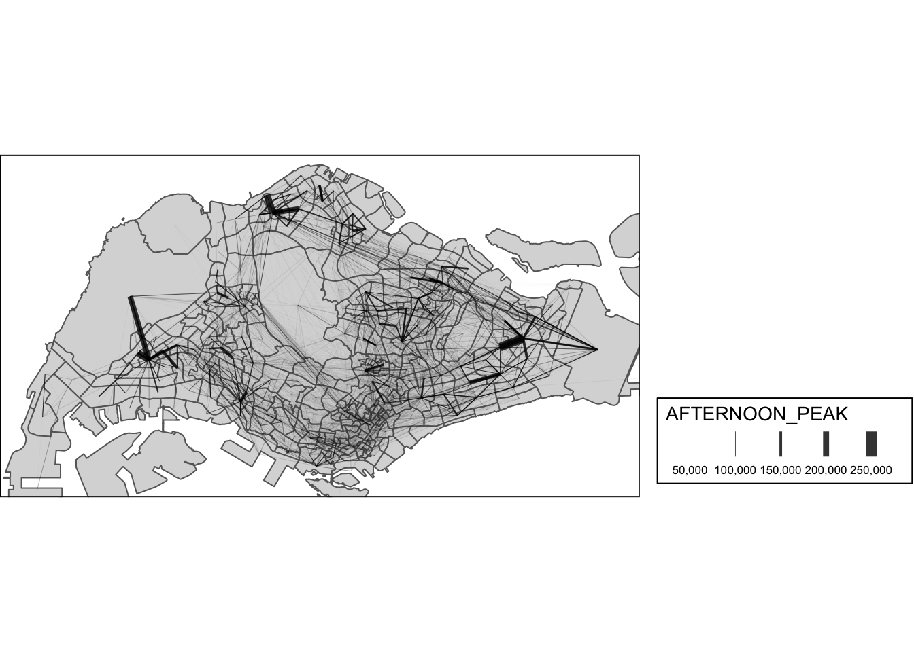
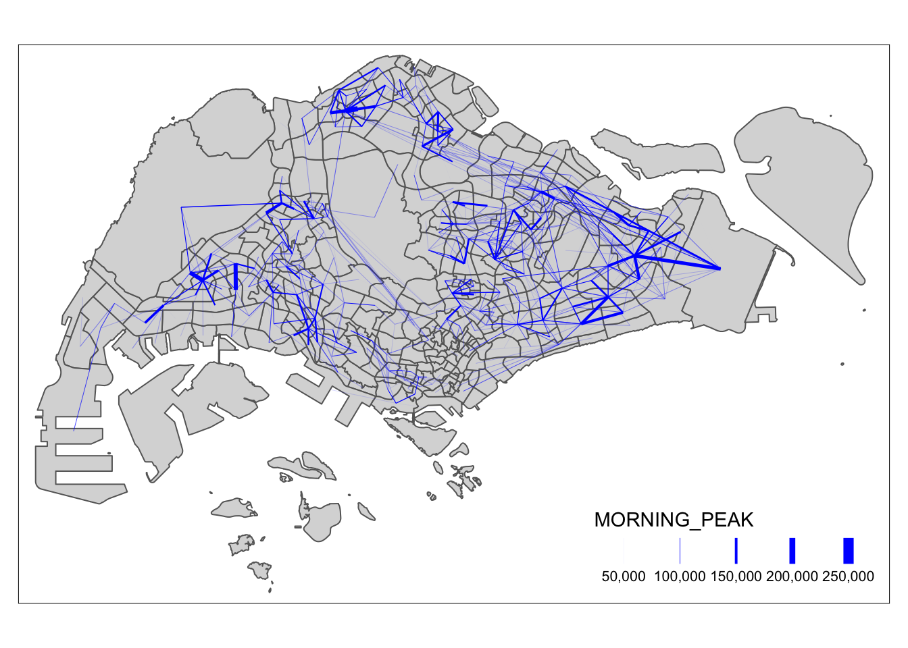
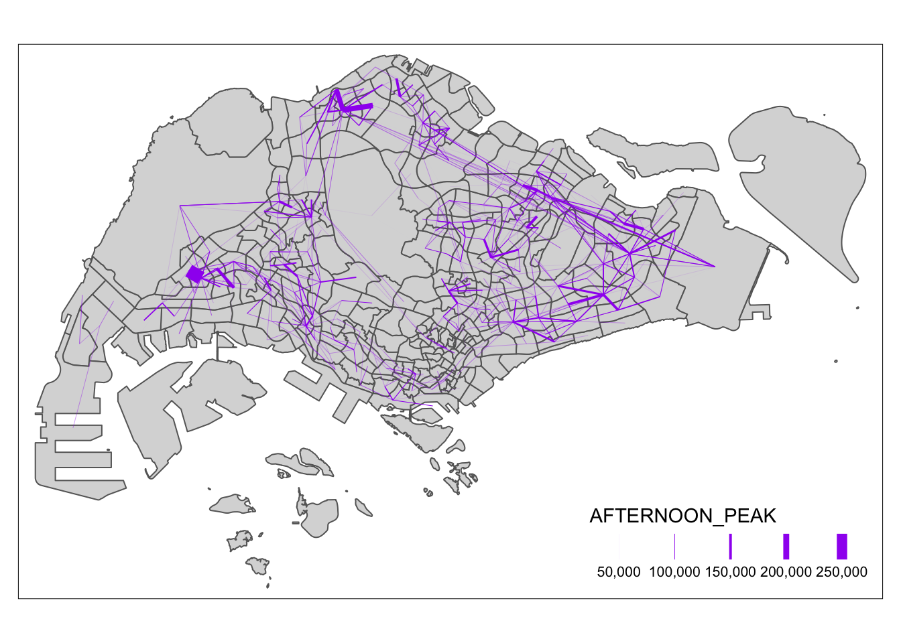
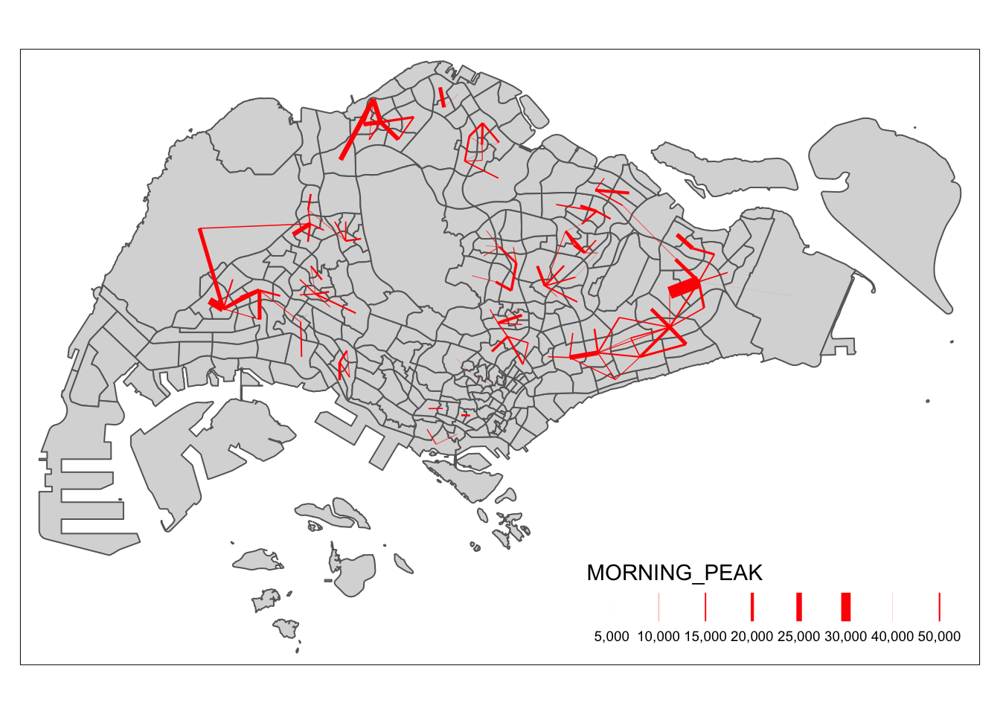
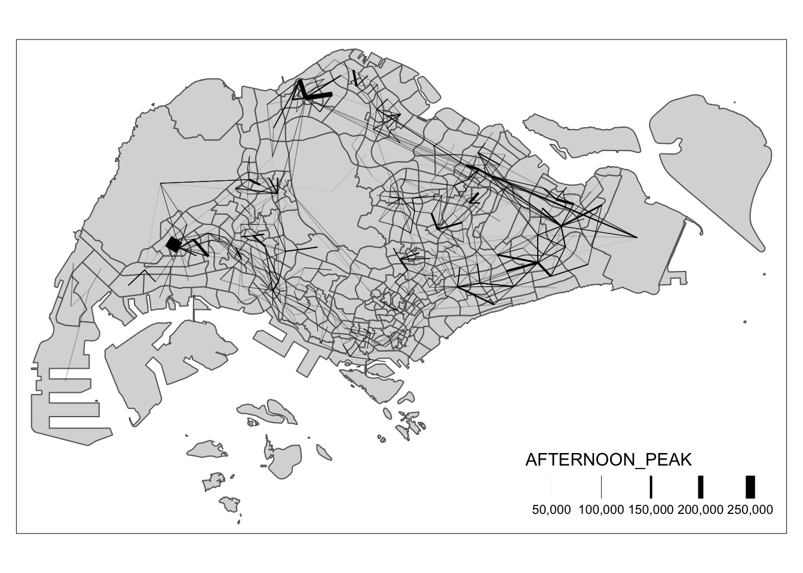

pacman::p_load(tmap, sf, DT, ggpubr, performance, tidyverse, stplanr)Take-Home_Exercise_2
1 OVERVIEW
1.1 Background
Despite the increasing amount of open data available for public consumption, significant practical research has not yet been conducted to demonstrate how these disparate data sources can be integrated, analyzed, and modeled to support policy-making decisions. There is a general lack of practical research demonstrating how geospatial data science and analytics (GDSA) can be used to support decision-making.
1.2 Objective
The purpose of this analysis is to conduct a case study to demonstrate the potential value of GDSA to integrate publicly available data from multiple sources to build a spatial interaction model to identify factors influencing public transport urban traffic patterns.
Geospatial Data Science
Derive an analytical hexagon data of 325m (this distance is the perpendicular distance between the centre of the hexagon and its edges) to represent the traffic analysis zone (TAZ).
With reference to the time intervals provided in the table below, construct an O-D matrix of commuter flows for a time interval of your choice by integrating Passenger Volume by Origin Destination Bus Stops and Bus Stop Location from LTA DataMall. The O-D matrix must be aggregated at the analytics hexagon level
Peak hour period Bus tap on time Weekday morning peak 6am to 9am Weekday afternoon peak 5pm to 8pm Weekend/holiday morning peak 11am to 2pm Weekend/holiday evening peak 4pm to 7pm Display the O-D flows of the passenger trips by using appropriate geovisualisation methods (not more than 5 maps).
Describe the spatial patterns revealed by the geovisualisation (not more than 100 words per visual).
Assemble at least three propulsive and three attractiveness variables by using aspatial and geospatial from publicly available sources.
Compute a distance matrix by using the analytical hexagon data derived earlier.
Spatial Interaction Modelling
Calibrate spatial interactive models to determine factors affecting urban commuting flows at the selected time interval.
Present the modelling results by using appropriate geovisualisation and graphical visualisation methods. (Not more than 5 visuals)
With reference to the Spatial Interaction Model output tables, maps and data visualisation prepared, describe the modelling results. (not more than 100 words per visual).
2 GETTING STARTED
2.1 Setting the Analytical Tools
The code chunk below installs and loads the various packages
2.2 Importing Data
We will import the data as a first step before proceeding with data cleaning, data wrangling and data exploration for the following:
Passenger Volume
PassengerVolume is an aspatial data, we can import the data simply by using the read_csv function from tidyverse package and output it as a tibble dataframe called odbus
odbus <- read_csv("data/aspatial/origin_destination_bus_202310.csv")Rows: 5694297 Columns: 7
── Column specification ────────────────────────────────────────────────────────
Delimiter: ","
chr (5): YEAR_MONTH, DAY_TYPE, PT_TYPE, ORIGIN_PT_CODE, DESTINATION_PT_CODE
dbl (2): TIME_PER_HOUR, TOTAL_TRIPS
ℹ Use `spec()` to retrieve the full column specification for this data.
ℹ Specify the column types or set `show_col_types = FALSE` to quiet this message.Bus Stop Location
Bus Stop is a geospatial data in .shp file. We save it as a sf data frame called busstop using the st_read function of the sf package. The data is then geo-referenced to coordinates from the Singapore SVY21 coordinate system (EPSG: 3414)
Show the code
busstop <- st_read(dsn = "data/geospatial",
layer = "BusStop") %>%
st_transform(crs=3414)Reading layer `BusStop' from data source
`/Users/WangYuhui/Desktop/SMU/Special_Term/ISSS624-G1-Applied-Geospatial-Analytics/ISSS624/Take-Home_Ex_2/data/geospatial'
using driver `ESRI Shapefile'
Simple feature collection with 5159 features and 3 fields
Geometry type: POINT
Dimension: XY
Bounding box: xmin: 3970.122 ymin: 26482.1 xmax: 48284.56 ymax: 52983.82
Projected CRS: SVY21sub-zone boundary of URA Master Plan 2019
sub-zone boundary of URA Master Plan 2019 is a geospatial data in .shp file. We save it as a sf data frame called mpsz using the st_read function of the sf package. The data is then geo-referenced to coordinates from the Singapore SVY21 coordinate system (EPSG: 3414)
Show the code
mpsz <- st_read(dsn = "data/geospatial",
layer = "MPSZ-2019") %>%
st_transform(crs = 3414)Reading layer `MPSZ-2019' from data source
`/Users/WangYuhui/Desktop/SMU/Special_Term/ISSS624-G1-Applied-Geospatial-Analytics/ISSS624/Take-Home_Ex_2/data/geospatial'
using driver `ESRI Shapefile'
Simple feature collection with 332 features and 6 fields
Geometry type: MULTIPOLYGON
Dimension: XY
Bounding box: xmin: 103.6057 ymin: 1.158699 xmax: 104.0885 ymax: 1.470775
Geodetic CRS: WGS 84mpszSimple feature collection with 332 features and 6 fields
Geometry type: MULTIPOLYGON
Dimension: XY
Bounding box: xmin: 2667.538 ymin: 15748.72 xmax: 56396.44 ymax: 50256.33
Projected CRS: SVY21 / Singapore TM
First 10 features:
SUBZONE_N SUBZONE_C PLN_AREA_N PLN_AREA_C REGION_N
1 MARINA EAST MESZ01 MARINA EAST ME CENTRAL REGION
2 INSTITUTION HILL RVSZ05 RIVER VALLEY RV CENTRAL REGION
3 ROBERTSON QUAY SRSZ01 SINGAPORE RIVER SR CENTRAL REGION
4 JURONG ISLAND AND BUKOM WISZ01 WESTERN ISLANDS WI WEST REGION
5 FORT CANNING MUSZ02 MUSEUM MU CENTRAL REGION
6 MARINA EAST (MP) MPSZ05 MARINE PARADE MP CENTRAL REGION
7 SUDONG WISZ03 WESTERN ISLANDS WI WEST REGION
8 SEMAKAU WISZ02 WESTERN ISLANDS WI WEST REGION
9 SOUTHERN GROUP SISZ02 SOUTHERN ISLANDS SI CENTRAL REGION
10 SENTOSA SISZ01 SOUTHERN ISLANDS SI CENTRAL REGION
REGION_C geometry
1 CR MULTIPOLYGON (((33222.98 29...
2 CR MULTIPOLYGON (((28481.45 30...
3 CR MULTIPOLYGON (((28087.34 30...
4 WR MULTIPOLYGON (((14557.7 304...
5 CR MULTIPOLYGON (((29542.53 31...
6 CR MULTIPOLYGON (((35279.55 30...
7 WR MULTIPOLYGON (((15772.59 21...
8 WR MULTIPOLYGON (((19843.41 21...
9 CR MULTIPOLYGON (((30870.53 22...
10 CR MULTIPOLYGON (((26879.04 26...mpsz <- write_rds(mpsz, "data/rds/mpsz.rds")2.3 Classify peak hours
According to the time interval specified in the task, calculate the passenger travel volume generated at the departure place. Passenger itineraries by origin are saved in 4 data frames according to their respective classifications, namely:
Weekday morning peak
Weekday afternoon peak
Weekend morning peak
Weekend evening peak
Save the processed data to a .rds data format file. Output files are saved in the rds subfolder. This is done to reduce load times and keep large raw files from being uploaded to GitHub.
Show the code
weekday_morning_peak <- odbus %>%
filter(DAY_TYPE == "WEEKDAY") %>%
filter(TIME_PER_HOUR >= 6 &
TIME_PER_HOUR <= 9) %>%
group_by(ORIGIN_PT_CODE, DESTINATION_PT_CODE) %>%
summarise(TRIPS = sum(TOTAL_TRIPS))`summarise()` has grouped output by 'ORIGIN_PT_CODE'. You can override using
the `.groups` argument.Show the code
weekday_afternoon_peak <- odbus %>%
filter(DAY_TYPE == "WEEKDAY") %>%
filter(TIME_PER_HOUR >= 17 &
TIME_PER_HOUR <= 20) %>%
group_by(ORIGIN_PT_CODE, DESTINATION_PT_CODE) %>%
summarise(TRIPS = sum(TOTAL_TRIPS))`summarise()` has grouped output by 'ORIGIN_PT_CODE'. You can override using
the `.groups` argument.Show the code
weekend_morning_peak <- odbus %>%
filter(DAY_TYPE == "WEEKENDS/HOLIDAY") %>%
filter(TIME_PER_HOUR >= 11 &
TIME_PER_HOUR <= 14) %>%
group_by(ORIGIN_PT_CODE, DESTINATION_PT_CODE) %>%
summarise(TRIPS = sum(TOTAL_TRIPS))`summarise()` has grouped output by 'ORIGIN_PT_CODE'. You can override using
the `.groups` argument.Show the code
weekend_evening_peak <- odbus %>%
filter(DAY_TYPE == "WEEKENDS/HOLIDAY") %>%
filter(TIME_PER_HOUR >= 16 &
TIME_PER_HOUR <= 19) %>%
group_by(ORIGIN_PT_CODE, DESTINATION_PT_CODE) %>%
summarise(TRIPS = sum(TOTAL_TRIPS))`summarise()` has grouped output by 'ORIGIN_PT_CODE'. You can override using
the `.groups` argument.Show the code
write_rds(weekday_morning_peak, "data/rds/weekday_morning_peak.rds")
weekday_morning_peak <- read_rds("data/rds/weekday_morning_peak.rds")
write_rds(weekday_afternoon_peak, "data/rds/weekday_afternoon_peak.rds")
weekday_afternoon_peak <- read_rds("data/rds/weekday_afternoon_peak.rds")
write_rds(weekend_morning_peak, "data/rds/weekend_morning_peak.rds")
weekend_morning_peak <- read_rds("data/rds/weekend_morning_peak.rds")
write_rds(weekend_evening_peak, "data/rds/weekend_evening_peak.rds")
weekend_evening_peak <- read_rds("data/rds/weekend_evening_peak.rds")3 data wrangling
3.1 Passenger Volume
Show the code
glimpse(odbus)Rows: 5,694,297
Columns: 7
$ YEAR_MONTH <chr> "2023-10", "2023-10", "2023-10", "2023-10", "2023-…
$ DAY_TYPE <chr> "WEEKENDS/HOLIDAY", "WEEKDAY", "WEEKENDS/HOLIDAY",…
$ TIME_PER_HOUR <dbl> 16, 16, 14, 14, 17, 17, 17, 7, 14, 14, 10, 20, 20,…
$ PT_TYPE <chr> "BUS", "BUS", "BUS", "BUS", "BUS", "BUS", "BUS", "…
$ ORIGIN_PT_CODE <chr> "04168", "04168", "80119", "80119", "44069", "2028…
$ DESTINATION_PT_CODE <chr> "10051", "10051", "90079", "90079", "17229", "2014…
$ TOTAL_TRIPS <dbl> 3, 5, 3, 5, 4, 1, 24, 2, 1, 7, 3, 2, 5, 1, 1, 1, 1…Since we plan to use the bus stop code as a unique identifier when joining with other datasets, change it to a factor data type.
Show the code
odbus$ORIGIN_PT_CODE <- as.factor(odbus$ORIGIN_PT_CODE)
odbus$DESTINATION_PT_CODE <- as.factor(odbus$DESTINATION_PT_CODE)Checking for Duplicates and Missing Data
Show the code
duplicate <- odbus %>%
group_by_all() %>%
filter(n()>1) %>%
ungroup()
duplicate# A tibble: 0 × 7
# ℹ 7 variables: YEAR_MONTH <chr>, DAY_TYPE <chr>, TIME_PER_HOUR <dbl>,
# PT_TYPE <chr>, ORIGIN_PT_CODE <fct>, DESTINATION_PT_CODE <fct>,
# TOTAL_TRIPS <dbl>Show the code
summary(odbus) YEAR_MONTH DAY_TYPE TIME_PER_HOUR PT_TYPE
Length:5694297 Length:5694297 Min. : 0.00 Length:5694297
Class :character Class :character 1st Qu.:10.00 Class :character
Mode :character Mode :character Median :14.00 Mode :character
Mean :14.04
3rd Qu.:18.00
Max. :23.00
ORIGIN_PT_CODE DESTINATION_PT_CODE TOTAL_TRIPS
22009 : 17444 22009 : 17328 Min. : 1.00
84009 : 16842 84009 : 16808 1st Qu.: 2.00
52009 : 16734 52009 : 16253 Median : 4.00
75009 : 16610 75009 : 16143 Mean : 20.76
59009 : 14991 59009 : 15134 3rd Qu.: 12.00
46009 : 14642 46009 : 14167 Max. :36668.00
(Other):5597034 (Other):5598464 There is no missing data or duplicates.
3.2 Combining Busstop and mpsz
Code chunk below populates the planning subzone code (i.e. SUBZONE_C) of mpsz sf data frame into busstop sf data frame.
busstop_mpsz <- st_intersection(busstop, mpsz) %>%
select(BUS_STOP_N, SUBZONE_C) Warning: attribute variables are assumed to be spatially constant throughout
all geometrieswrite_rds(busstop_mpsz, "data/rds/busstop_mpsz.rds") 3.3 Creating Hexagon layer
Now, I am going to create a hexagon layer:
# cell size of layer of 250m
area_honeycomb_grid = st_make_grid(busstop_mpsz, c(650, 650), what = "polygons", square = FALSE, crs = 3414)
# To sf and add grid ID
honeycomb_grid_sf = st_sf(area_honeycomb_grid)st_write(honeycomb_grid_sf, "data/geospatial/hexagon.shp",append=TRUE)Updating layer `hexagon' to data source `data/geospatial/hexagon.shp' using driver `ESRI Shapefile'
Updating existing layer hexagon
Writing 2988 features with 0 fields and geometry type Polygon.hexagon <- st_read(dsn = "data/geospatial",
layer = "hexagon") %>%
st_transform(crs = 3414)Reading layer `hexagon' from data source
`/Users/WangYuhui/Desktop/SMU/Special_Term/ISSS624-G1-Applied-Geospatial-Analytics/ISSS624/Take-Home_Ex_2/data/geospatial'
using driver `ESRI Shapefile'
Simple feature collection with 23904 features and 1 field
Geometry type: POLYGON
Dimension: XY
Bounding box: xmin: 3320.122 ymin: 26106.82 xmax: 48820.12 ymax: 50499.87
Projected CRS: SVY21 / Singapore TM4.3 Combine Hexagon and Busstop_Mpsz
Next, we are going to combine the datset busstop_mpsz and hexagon
od_data <- st_join(busstop_mpsz , hexagon,
by = c("geometry" = "geometry")) 4.4 Combine Peak data with od_data
od_day_m <- left_join(weekday_morning_peak , od_data,
by = c("ORIGIN_PT_CODE" = "BUS_STOP_N")) %>%
rename(ORIGIN_BS = ORIGIN_PT_CODE,
ORIGIN_SZ = SUBZONE_C,
DESTIN_BS = DESTINATION_PT_CODE)Warning in left_join(weekday_morning_peak, od_data, by = c(ORIGIN_PT_CODE = "BUS_STOP_N")): Detected an unexpected many-to-many relationship between `x` and `y`.
ℹ Row 1 of `x` matches multiple rows in `y`.
ℹ Row 5369 of `y` matches multiple rows in `x`.
ℹ If a many-to-many relationship is expected, set `relationship =
"many-to-many"` to silence this warning.od_day_a <- left_join(weekday_afternoon_peak , od_data,
by = c("ORIGIN_PT_CODE" = "BUS_STOP_N")) %>%
rename(ORIGIN_BS = ORIGIN_PT_CODE,
ORIGIN_SZ = SUBZONE_C,
DESTIN_BS = DESTINATION_PT_CODE)Warning in left_join(weekday_afternoon_peak, od_data, by = c(ORIGIN_PT_CODE = "BUS_STOP_N")): Detected an unexpected many-to-many relationship between `x` and `y`.
ℹ Row 1 of `x` matches multiple rows in `y`.
ℹ Row 5369 of `y` matches multiple rows in `x`.
ℹ If a many-to-many relationship is expected, set `relationship =
"many-to-many"` to silence this warning.od_end_m <- left_join(weekend_morning_peak , od_data,
by = c("ORIGIN_PT_CODE" = "BUS_STOP_N")) %>%
rename(ORIGIN_BS = ORIGIN_PT_CODE,
ORIGIN_SZ = SUBZONE_C,
DESTIN_BS = DESTINATION_PT_CODE)Warning in left_join(weekend_morning_peak, od_data, by = c(ORIGIN_PT_CODE = "BUS_STOP_N")): Detected an unexpected many-to-many relationship between `x` and `y`.
ℹ Row 1 of `x` matches multiple rows in `y`.
ℹ Row 5369 of `y` matches multiple rows in `x`.
ℹ If a many-to-many relationship is expected, set `relationship =
"many-to-many"` to silence this warning.od_end_a <- left_join(weekday_afternoon_peak , od_data,
by = c("ORIGIN_PT_CODE" = "BUS_STOP_N")) %>%
rename(ORIGIN_BS = ORIGIN_PT_CODE,
ORIGIN_SZ = SUBZONE_C,
DESTIN_BS = DESTINATION_PT_CODE)Warning in left_join(weekday_afternoon_peak, od_data, by = c(ORIGIN_PT_CODE = "BUS_STOP_N")): Detected an unexpected many-to-many relationship between `x` and `y`.
ℹ Row 1 of `x` matches multiple rows in `y`.
ℹ Row 5369 of `y` matches multiple rows in `x`.
ℹ If a many-to-many relationship is expected, set `relationship =
"many-to-many"` to silence this warning.Before continue, it is a good practice for us to check for duplicating records.
Show the code
duplicate <- od_day_m %>%
group_by_all() %>%
filter(n()>1) %>%
ungroup()
duplicate <- od_day_a %>%
group_by_all() %>%
filter(n()>1) %>%
ungroup()
duplicate <- od_end_m %>%
group_by_all() %>%
filter(n()>1) %>%
ungroup()
duplicate <- od_end_a %>%
group_by_all() %>%
filter(n()>1) %>%
ungroup()If duplicated records are found, the code chunk below will be used to retain the unique records.
od_day_m <- unique(od_day_m)
od_day_a <- unique(od_day_a)
od_end_m <- unique(od_end_m)
od_end_a <- unique(od_end_a)It will be a good practice to confirm if the duplicating records issue has been addressed fully.
Next, we will update od_data data frame with the planning subzone codes
od_day_m <- left_join(od_day_m , od_data,
by = c("DESTIN_BS" = "BUS_STOP_N")) Warning in left_join(od_day_m, od_data, by = c(DESTIN_BS = "BUS_STOP_N")): Detected an unexpected many-to-many relationship between `x` and `y`.
ℹ Row 1 of `x` matches multiple rows in `y`.
ℹ Row 5361 of `y` matches multiple rows in `x`.
ℹ If a many-to-many relationship is expected, set `relationship =
"many-to-many"` to silence this warning.od_day_a <- left_join(od_day_a , od_data,
by = c("DESTIN_BS" = "BUS_STOP_N")) Warning in left_join(od_day_a, od_data, by = c(DESTIN_BS = "BUS_STOP_N")): Detected an unexpected many-to-many relationship between `x` and `y`.
ℹ Row 1 of `x` matches multiple rows in `y`.
ℹ Row 5361 of `y` matches multiple rows in `x`.
ℹ If a many-to-many relationship is expected, set `relationship =
"many-to-many"` to silence this warning.od_end_m <- left_join(od_end_m , od_data,
by = c("DESTIN_BS" = "BUS_STOP_N")) Warning in left_join(od_end_m, od_data, by = c(DESTIN_BS = "BUS_STOP_N")): Detected an unexpected many-to-many relationship between `x` and `y`.
ℹ Row 1 of `x` matches multiple rows in `y`.
ℹ Row 5361 of `y` matches multiple rows in `x`.
ℹ If a many-to-many relationship is expected, set `relationship =
"many-to-many"` to silence this warning.od_end_a <- left_join(od_end_a , od_data,
by = c("DESTIN_BS" = "BUS_STOP_N")) Warning in left_join(od_end_a, od_data, by = c(DESTIN_BS = "BUS_STOP_N")): Detected an unexpected many-to-many relationship between `x` and `y`.
ℹ Row 1 of `x` matches multiple rows in `y`.
ℹ Row 5361 of `y` matches multiple rows in `x`.
ℹ If a many-to-many relationship is expected, set `relationship =
"many-to-many"` to silence this warning.Show the code
od_day_m <- od_day_m %>%
rename(DESTIN_SZ = SUBZONE_C) %>%
drop_na() %>%
group_by(ORIGIN_SZ, DESTIN_SZ) %>%
summarise(MORNING_PEAK = sum(TRIPS))`summarise()` has grouped output by 'ORIGIN_SZ'. You can override using the
`.groups` argument.Show the code
od_day_a <- od_day_a %>%
rename(DESTIN_SZ = SUBZONE_C) %>%
drop_na() %>%
group_by(ORIGIN_SZ, DESTIN_SZ) %>%
summarise(AFTERNOON_PEAK = sum(TRIPS))`summarise()` has grouped output by 'ORIGIN_SZ'. You can override using the
`.groups` argument.Show the code
od_end_m <- od_end_m %>%
rename(DESTIN_SZ = SUBZONE_C) %>%
drop_na() %>%
group_by(ORIGIN_SZ, DESTIN_SZ) %>%
summarise(MORNING_PEAK = sum(TRIPS))`summarise()` has grouped output by 'ORIGIN_SZ'. You can override using the
`.groups` argument.Show the code
od_end_a <- od_end_a %>%
rename(DESTIN_SZ = SUBZONE_C) %>%
drop_na() %>%
group_by(ORIGIN_SZ, DESTIN_SZ) %>%
summarise(AFTERNOON_PEAK = sum(TRIPS))`summarise()` has grouped output by 'ORIGIN_SZ'. You can override using the
`.groups` argument.It is time to save the output into an rds file format.
write_rds(od_day_m, "data/rds/od_day_m.rds")
write_rds(od_day_a, "data/rds/od_day_a.rds")
write_rds(od_end_m, "data/rds/od_end_m.rds")
write_rds(od_end_a, "data/rds/od_end_a.rds")od_day_m <- read_rds("data/rds/od_day_m.rds")
od_day_a <- read_rds("data/rds/od_day_a.rds")
od_end_m <- read_rds("data/rds/od_end_m.rds")
od_end_a <- read_rds("data/rds/od_end_a.rds")5 Visualising Spatial Interaction
5.1 Removing intra-zonal flows
I will not plot the intra-zonal flows. The code chunk below will be used to remove intra-zonal flows.
od_day_m <- od_day_m[od_day_m$ORIGIN_SZ!=od_day_m$DESTIN_SZ,]
od_day_a <- od_day_a[od_day_a$ORIGIN_SZ!=od_day_a$DESTIN_SZ,]
od_end_m <- od_end_m[od_end_m$ORIGIN_SZ!=od_end_m$DESTIN_SZ,]
od_end_a <- od_end_a[od_end_a$ORIGIN_SZ!=od_end_a$DESTIN_SZ,]5.2 Creating desire lines
In this code chunk below, od2line() of stplanr package is used to create the desire lines.
flowLine_day_m <- od2line(flow = od_day_m,
zones = mpsz,
zone_code = "SUBZONE_C")Creating centroids representing desire line start and end points.flowLine_day_a <- od2line(flow = od_day_a,
zones = mpsz,
zone_code = "SUBZONE_C")Creating centroids representing desire line start and end points.flowLine_end_m <- od2line(flow = od_end_m,
zones = mpsz,
zone_code = "SUBZONE_C")Creating centroids representing desire line start and end points.flowLine_end_a <- od2line(flow = od_end_a,
zones = mpsz,
zone_code = "SUBZONE_C")Creating centroids representing desire line start and end points.5.3 Visualising the desire lines
To visualise the resulting desire lines, the code chunk below is used.
Show the code
mapex <- st_bbox(hexagon)
tm_shape(mpsz, bbox = mapex) +
tm_polygons() +
tm_shape(flowLine_day_m) +
tm_lines(lwd = "MORNING_PEAK",
col = "blue",
style = "quantile",
scale = c(0.1, 1, 3, 5, 7, 10),
n = 6,
alpha = 0.8) +
tm_layout(outer.margins = c(0, 0, 0., 0),
legend.position = c("right", "bottom"),
legend.frame = TRUE,
legend.outside = TRUE) Warning in g$scale * (w_legend/maxW): longer object length is not a multiple of
shorter object lengthWarning in g$scale * (x/maxW): longer object length is not a multiple of
shorter object lengthLegend labels were too wide. Therefore, legend.text.size has been set to 0.53. Increase legend.width (argument of tm_layout) to make the legend wider and therefore the labels larger.
Show the code
mapex <- st_bbox(hexagon)
tm_shape(mpsz, bbox = mapex) +
tm_polygons() +
tm_shape(flowLine_day_a) +
tm_lines(lwd = "AFTERNOON_PEAK",
col = "purple",
style = "quantile",
scale = c(0.1, 1, 3, 5, 7, 10),
n = 6,
alpha = 0.8) +
tm_layout(outer.margins = c(0, 0, 0., 0),
legend.position = c("right", "bottom"),
legend.frame = TRUE,
legend.outside = TRUE) Warning in g$scale * (w_legend/maxW): longer object length is not a multiple of
shorter object lengthWarning in g$scale * (x/maxW): longer object length is not a multiple of
shorter object lengthLegend labels were too wide. Therefore, legend.text.size has been set to 0.53. Increase legend.width (argument of tm_layout) to make the legend wider and therefore the labels larger.
Show the code
mapex <- st_bbox(hexagon)
tm_shape(mpsz, bbox = mapex) +
tm_polygons() +
tm_shape(flowLine_end_m) +
tm_lines(lwd = "MORNING_PEAK",
col = "red",
style = "quantile",
scale = c(0.1, 1, 3, 5, 7, 10),
n = 6,
alpha = 0.8) +
tm_layout(outer.margins = c(0, 0, 0., 0),
legend.position = c("right", "bottom"),
legend.frame = TRUE,
legend.outside = TRUE) Warning in g$scale * (w_legend/maxW): longer object length is not a multiple of
shorter object lengthWarning in g$scale * (x/maxW): longer object length is not a multiple of
shorter object lengthLegend labels were too wide. Therefore, legend.text.size has been set to 0.39. Increase legend.width (argument of tm_layout) to make the legend wider and therefore the labels larger.
Show the code
mapex <- st_bbox(hexagon)
tm_shape(mpsz, bbox = mapex) +
tm_polygons() +
tm_shape(flowLine_end_a) +
tm_lines(lwd = "AFTERNOON_PEAK",
col = "black",
style = "quantile",
scale = c(0.1, 1, 3, 5, 7, 10),
n = 6,
alpha = 0.8) +
tm_layout(outer.margins = c(0, 0, 0., 0),
legend.position = c("right", "bottom"),
legend.frame = TRUE,
legend.outside = TRUE) Warning in g$scale * (w_legend/maxW): longer object length is not a multiple of
shorter object lengthWarning in g$scale * (x/maxW): longer object length is not a multiple of
shorter object lengthLegend labels were too wide. Therefore, legend.text.size has been set to 0.53. Increase legend.width (argument of tm_layout) to make the legend wider and therefore the labels larger.
When the flow data are very messy and highly skewed like the one shown above, it is wiser to focus on selected flows, for example flow greater than or equal to 5000 as shown below.
Show the code
tm_shape(mpsz) +
tm_polygons() +
flowLine_day_m %>%
filter(MORNING_PEAK >= 5000) %>%
tm_shape() +
tm_lines(lwd = "MORNING_PEAK",
col = "blue",
style = "quantile",
scale = c(0.1, 1, 3, 5, 7, 10),
n = 6,
alpha = 1)Warning in g$scale * (w_legend/maxW): longer object length is not a multiple of
shorter object lengthWarning in g$scale * (x/maxW): longer object length is not a multiple of
shorter object length
Show the code
tm_shape(mpsz) +
tm_polygons() +
flowLine_day_a %>%
filter(AFTERNOON_PEAK >= 5000) %>%
tm_shape() +
tm_lines(lwd = "AFTERNOON_PEAK",
col = "purple",
style = "quantile",
scale = c(0.1, 1, 3, 5, 7, 10),
n = 6,
alpha = 1)Warning in g$scale * (w_legend/maxW): longer object length is not a multiple of
shorter object lengthWarning in g$scale * (x/maxW): longer object length is not a multiple of
shorter object length
Show the code
tm_shape(mpsz) +
tm_polygons() +
flowLine_end_m %>%
filter(MORNING_PEAK >= 5000) %>%
tm_shape() +
tm_lines(lwd = "MORNING_PEAK",
col = "red",
style = "quantile",
scale = c(0.1, 1, 3, 5, 7, 10),
n = 6,
alpha = 1)Warning in g$scale * (w_legend/maxW): longer object length is not a multiple of
shorter object lengthWarning in g$scale * (x/maxW): longer object length is not a multiple of
shorter object lengthLegend labels were too wide. Therefore, legend.text.size has been set to 0.58. Increase legend.width (argument of tm_layout) to make the legend wider and therefore the labels larger.
Show the code
tm_shape(mpsz) +
tm_polygons() +
flowLine_end_a %>%
filter(AFTERNOON_PEAK >= 5000) %>%
tm_shape() +
tm_lines(lwd = "AFTERNOON_PEAK",
col = "black",
style = "quantile",
scale = c(0.1, 1, 3, 5, 7, 10),
n = 6,
alpha = 1)Warning in g$scale * (w_legend/maxW): longer object length is not a multiple of
shorter object lengthWarning in g$scale * (x/maxW): longer object length is not a multiple of
shorter object length